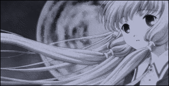

credits
site
this site is not handmade but more of a cobbled together mess of stuff i pulled from across the internet. but then again, isn't all art like that? special thanks to neocities for hosting and w3schools for many html fragments.
HEAVILY inspired by
now-defunct lain fanpage "marionette" and
website template "memories" by "miyu" on kiwi-ice (recreated by hand)
i also recommend using
createblog, an older site with plenty of free layouts. a lot of them are broken, but you can still get inspiration!
the microblog's template is by the talented
nomnomnami
graphics
main homepage art by CLAMP, edited by me
other graphics collected from neocities
contact if anything needs removal or credit!
tools
html + css + javascript
vim
dithermark for recoloring images
paint.net and gimp
everyone on neocities
return
home?
